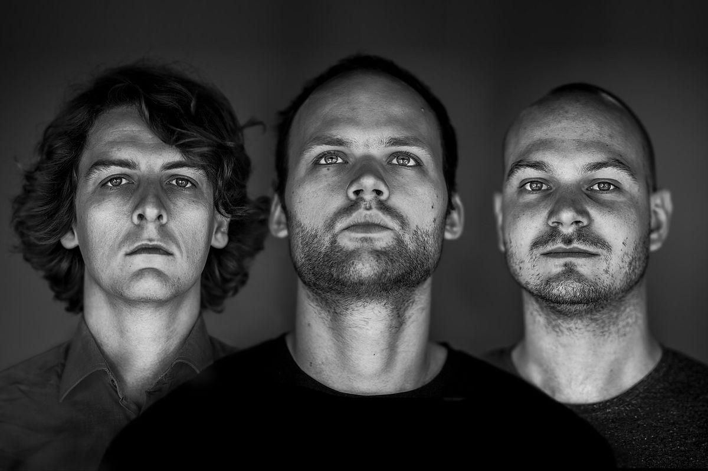

Mazerunnaz presents: Noisia invites
NOISIA
Phace
Misanthrop
Mindscape
Venue: Akvarium / Budapest. Date and time: 20th October 2021, 10:00 PM
We proudly present our annual party each time with Noisia. The masters of production and sound design are coming to Hungary.
Visit this great event and have some fun!

(photo by Imtiazwillems)
About Noisia
Starting from their studio in their hometown of Groningen, Netherlands, Noisia have gradually developed and cultivated a sound that’s all their own; a sound that’s obsessed with production techniques; a sound that’s instantly recognizable whether you’re hearing three minutes of a Noisia track dropped at a festival or three hours of it while playing Devil May Cry 5.
Since their first release in 2003, Noisa has been voted Best D&B Act three times over at the Beatport Music Awards, licensed music for numerous video games, and started three record labels: Vision, Division, and Invisible. Having pushed the envelope and successfully managed to blend incredible sound design with unrelenting and uncompromising beats and basslines, Noisia’s sound is undoubtedly unique.
Pre-order your ticket at www.mazerunnazdnb.com !